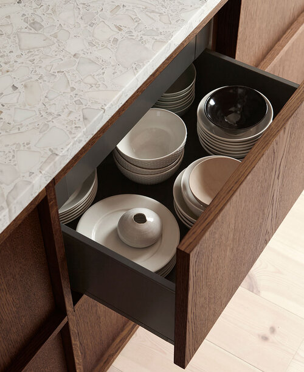
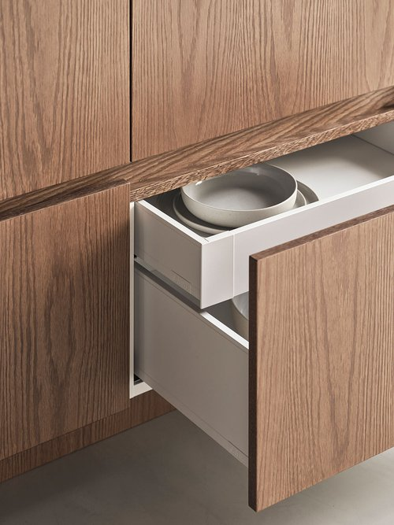
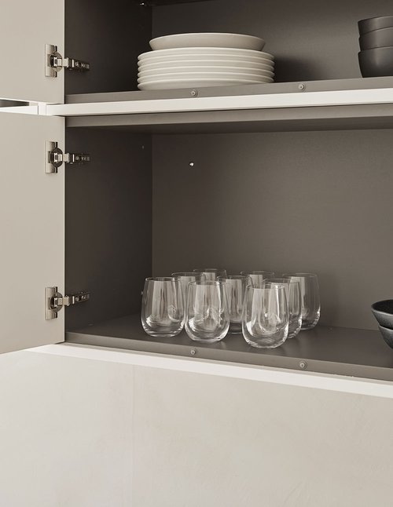
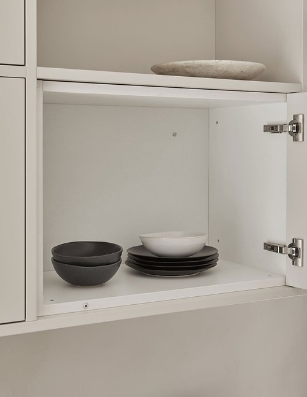
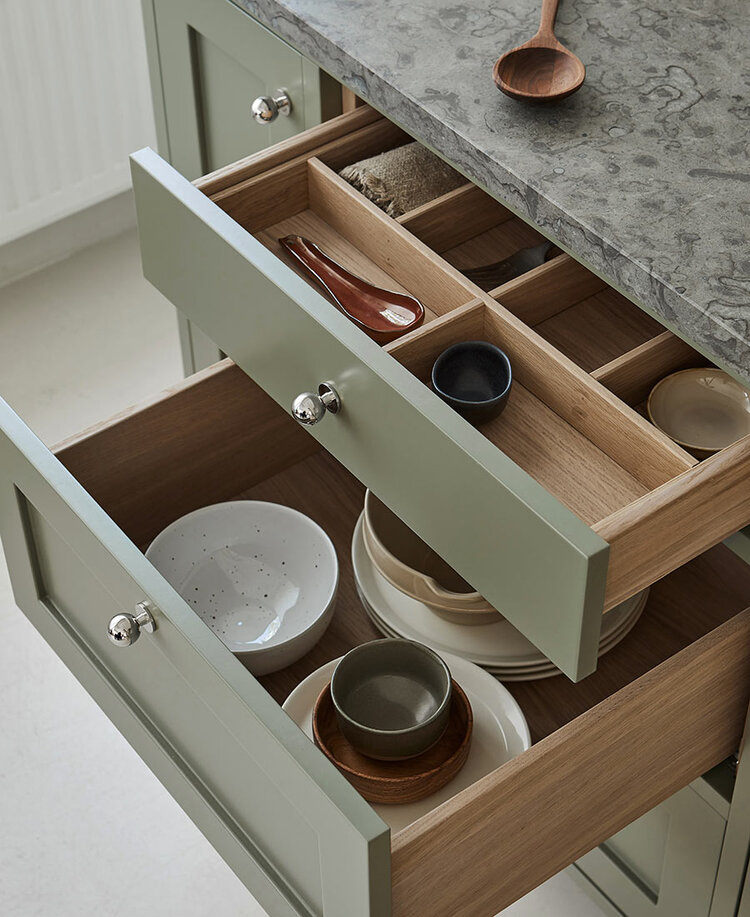
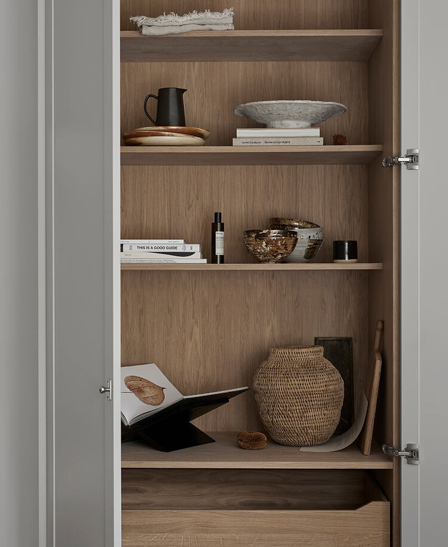
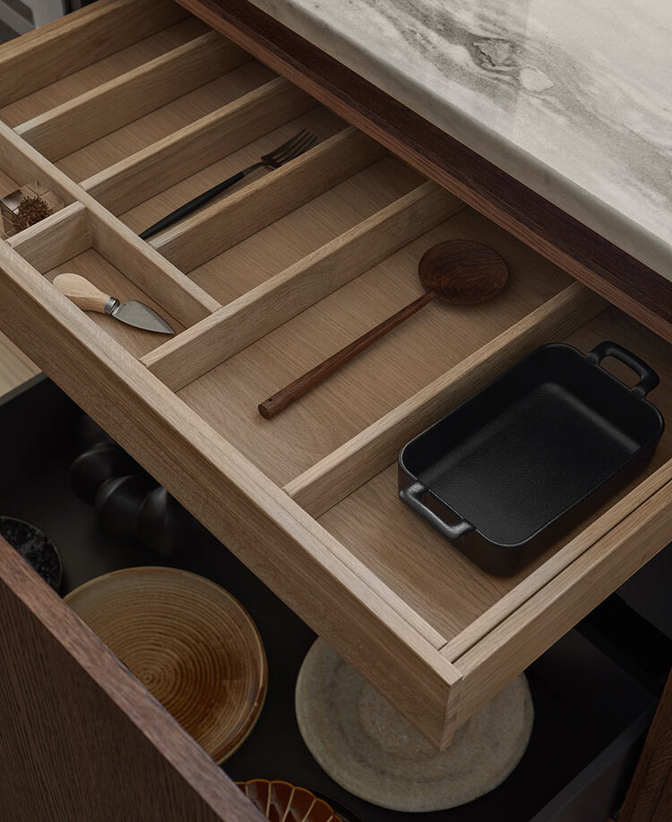
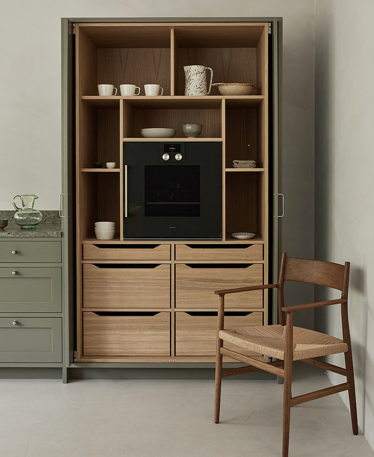
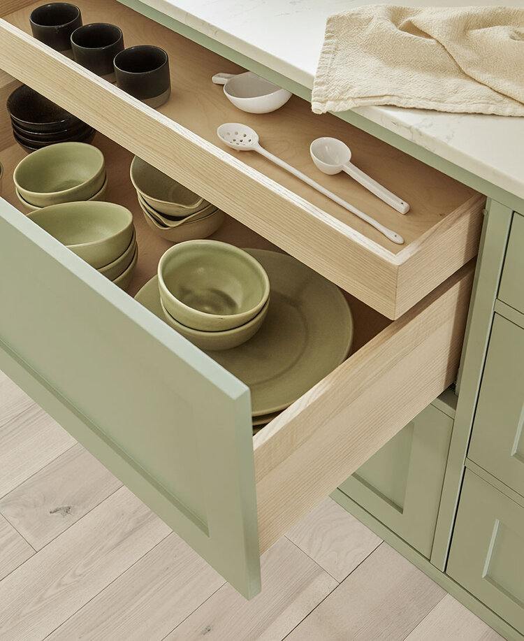
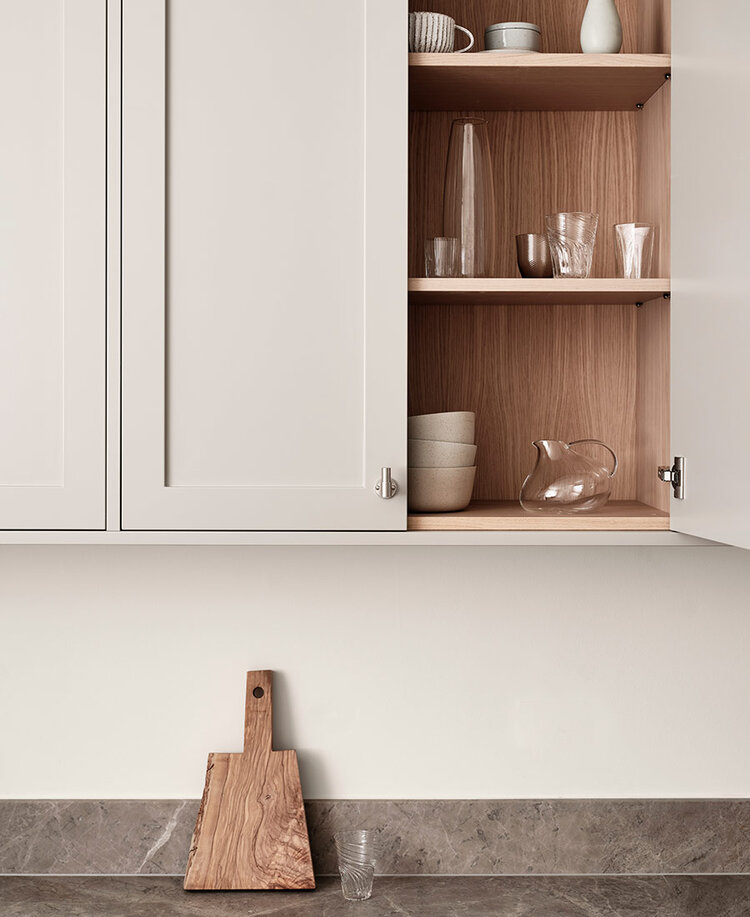

Drawers and cabinets
A beautiful kitchen to look at but just as beautiful on the inside. Below you see what is included in our kitchens in basic offer, as well as a selection of all the additional options we offer. Talk to your kitchen designer for advice on your particular kitchen.
Ground kitchen offer
Gray or white legra box drawers in metal from Blum are included as standard in all our kitchens. The frames are built in a 19 mm furniture board, clad with gray or white melamine and the doors are made of a high-quality foiled mdf, painted in any color.

Our gray Legrabox drawers in metal; this is the standard option and included in all our kitchens; available in gray or white.

White Legrabox drawer in metal, standard and included in all our kitchens; available in gray or white.

Grey inside of our cabinet in standard offer, clad with gray or white melamine.

White inside of our cabinet in standard offer, clad with gray or white melamine.
Additional options
For all our kitchens, we offer drawers in solid oak or ash, with matching cutlery inserts. Wood-clad cabinets and frames are also available in different materials and treatments, this is something our kitchen designers will help you with further into the process.

Solid wooden drawers in oak; the cutlery insert has been tailored to the width of the drawer.

Interior cabinets and shelves in oak for this shaker kitchen on the west coast.

Solid wooden drawer in oak; the cutlery insert has been tailored to the width of the drawer to create that precise, site-built feeling.

A site-built pocket door cabinet in white pigmented oak where the doors are hidden on the side when the cabinet is open. Features an Gaggenau oven and a limestone countertop that pairs nicely with this green shaker kitchen.

Solid wooden drawers in ash that match gorgeously with Elin Alemdar’s shaker kitchen.

A shaker kitchen in Copenhagen with cabinets interiors and shelves upholstered in oak. See the most beautiful shaker kitchens here.